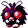

#048
Venonat
BugPoison
Abilities: Tinted Lens, Compound Eyes
Base stats BST 305
HP60
Attack55
Defense50
Speed45
Sp. Atk40
Sp. Def55
Evolution
dbbw EVOLVE_LEVEL, 31, VENOMOTHLevel-up learnset
LevelMoveType
Lv. 1Struggle BugBug
Lv. 1DisableNormal
Lv. 1TackleNormal
Lv. 1ForesightNormal
Lv. 7SupersonicNormal
Lv. 10Bug BiteBug
Lv. 13ConfusionPsychic
Lv. 15Sleep PowderGrass
Lv. 15Stun SporeGrass
Lv. 15PoisonpowderPoison
Lv. 17PsybeamPsychic
Lv. 21Poison FangPoison
Lv. 24Leech LifeBug
Lv. 25Mega DrainGrass
Lv. 25Bug BuzzBug
Lv. 27Zen HeadbuttPsychic
Lv. 33Baton PassNormal
Lv. 36PsychicPsychic
Lv. 39Morning SunNormal